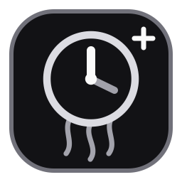
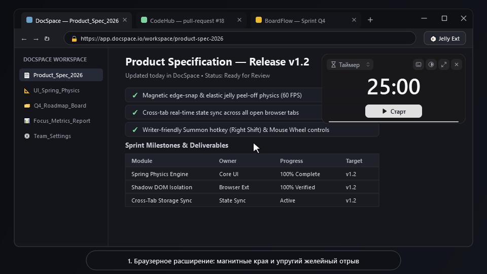
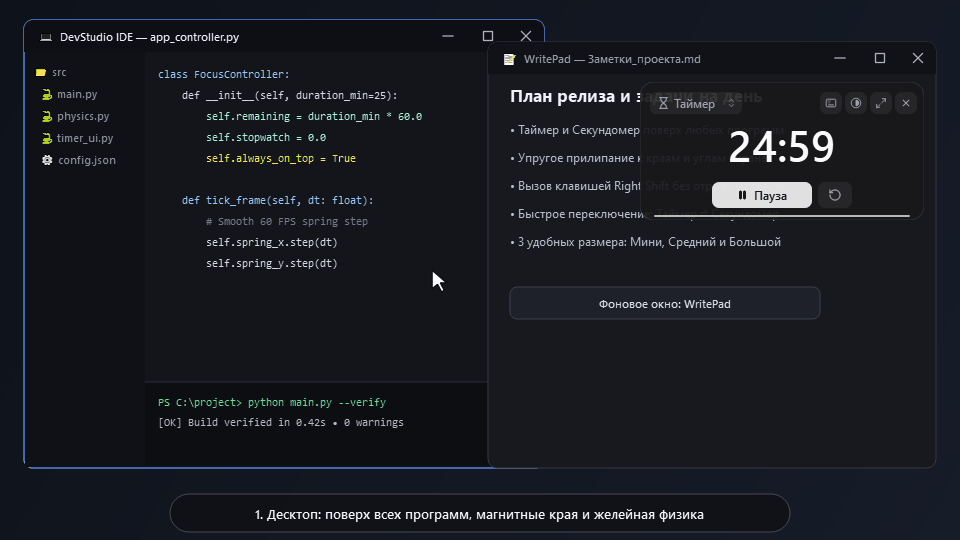

Jelly Timer v1.2.0 • Exp #05Built with a dark matte graphite surface, magnetic screen edges, elastic spring peel-off physics, and keyboard focus via Right Shift — so you never lose your typing cursor or active tab.

Injected cleanly via isolated Shadow DOM. Stays synchronized down to the tenth of a second as you switch between documentation, code reviews, and articles.

Standalone native overlay that floats above IDEs, writing tools, spreadsheets, and full-screen workspaces without stealing window focus.
| Capability | Browser Extension | Desktop Free | Jelly Timer Plus (PRO) |
|---|---|---|---|
| Magnetic edge-snap & spring peel-off physics (60 FPS) | Included | Included | Included |
| Writer-friendly focus key (Right Shift / Right Ctrl) | Included | Included | Included |
| Interface languages (English, Русский, Қазақша) | EN / RU / KZ | EN / RU / KZ | EN / RU / KZ |
| Floats over all OS applications outside the browser | Browser tabs only | Windows & macOS | Windows & macOS |
| Pomodoro cycles (auto work/break) & Flowtime (1/5 smart break) | — | — | Included |
| Auto-Focus by active window title (auto-resume in IDE / Docs) | — | — | Included |
| 7-day focus analytics chart & top active applications log | — | — | Included |
| Synthesized acoustic chimes (Chime chord & 528 Hz Zen tone) | Standard | Standard | 3 Acoustic Profiles + Plus Themes |
Jelly Timer Plus (PRO) grants a perpetual, non-exclusive license to install and use the software on your personal Windows and macOS devices, including minor v1.x updates.
If Jelly Timer Plus does not fit your workflow or experiences technical issues on your system, request a full refund within 14 days of purchase by emailing support.
Both the Browser Extension and Desktop applications store all timers, settings, and focus statistics strictly locally on your device. Zero telemetry or personal data is collected.